Safenet MobilePass is a software OTP token from Gemalto that,
in its most used configuration, serves as a two-factor authentication
solution for webmail portals. Unfortunately, as it is often the case
with this kind of solutions, rather than being of any use at all, they
show up as an obstacle to usability and personal freedom. Not only
does the token introduce the need to remember yet another PIN code
for which up to three failed insertion attempts are tolerated, after
which the prospect of an account lock becomes painfully concrete, but it
also requires a smartphone or a Windows installation in order to run.
As there is no place in my life for such diversions, I once found
myself in the absurd situation of not being able to access my email.
When the right to communicate, access one's own data, and carry out
working tasks, lie on the assumption of expensive gadgets or
unusable proprietary software as being the norm, it means that an abuse
against a minority is being perpetrated. This assumption would equate to
the situation of being denied the right to speak in a foreign country
just because we have no interest in learning the local language. As an
instrument of oppression, I then declared Safenet MobilePass as my enemy
to the sabotage and subversion of which I dedicated all the efforts of
one of my weekends. When the machine oppresses, break the machine.
It is important to understand that the scope of this activity is neither
the exposure of any security vulnerability nor the discussion of the
security of the solution. Since the infosec rat-race already provides with
plenty of such dissertations, the reader might want to look elsewhere for
detailed "threat modeling" or "risk assessment". Or ask the vendor directly
if concerned about his own security, the reply might not be as alarming
as expected.
Paradoxically I needed to use a lent Android tablet in order to reverse
engineer the mobile application. As a no-config software advocate,
I rejected the idea of instrumenting the code of the app, or to
rely on any reverse engineering framework, preferring to use only a
debugger and the decompiled code for the task. As a consequence, the
activity became exponentially time-consuming but ultimately rewarding.
For starters, to my greatest astonishment the application made no use
of any anti-debugging trick or reverse engineering deterrent, allowing
in the end for a not-so-painful experience.
It is important to understand that the scope of this activity is neither
the exposure of any security vulnerability nor the discussion of the
security of the solution. Since the infosec rat-race already provides with
plenty of such dissertations, the reader might want to look elsewhere for
detailed "threat modeling" or "risk assessment". Or ask the vendor directly
if concerned about his own security, the reply might not be as alarming
as expected.
Paradoxically I needed to use a lent Android tablet in order to
reverse engineer the mobile application. As a minimalist and no-config
software advocate, I refused to instrument the code of the app, or to
rely on any reverse engineering framework, preferring to use only a
debugger and the decompiled code for the task. As a consequence, the
activity became exponentially time-consuming but ultimately rewarding.
For starters, to my greatest astonishment the application made no use
of any anti-debugging trick or reverse engineering deterrent, allowing
in the end for a not-so-painful experience.
According to the debugger's trace log, calls to the Android substrate
represents the majority of function calls, but a closer look shows calls
to methods belonging to the com.safenet package:
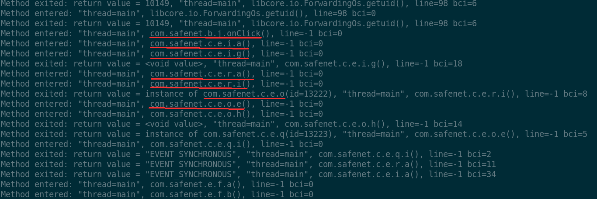
Also traces of apparently cryptographic material and calls to openssl
wrappers appear:
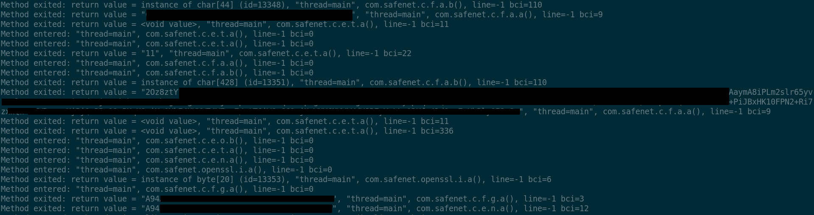
The last returned string, in the picture starting with "A94...",
offers a first trail to understand the behavior of the app. Indeed,
searching for this string in the trace gives more context: calls to
android.content.ContextWrapper.getDir, android.app.ContextImpl.getDataDir
and other methods in a way or another involved in file system access,
sourround the said returned string value. Inspecting the decompiled
code for function c.e.t.g, i.e. the function returning the
mentioned string, we clearly see calls to other functions such as
c.e.n.a:
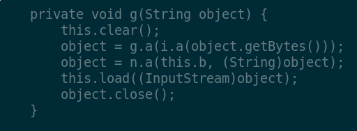
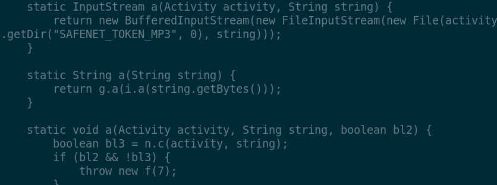
This appears more evident by looking at the top of the stack trace
of this context:
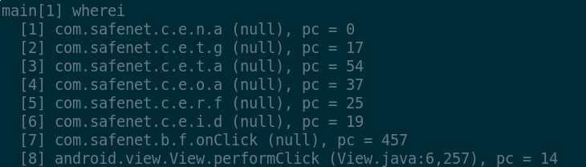
From the code of c.e.n.a we then see the application open a
file handle at the location built from the SAFENET_TOKEN_MP3 name and
the apparently-random string "A94..." If this assumption held, we would
be able to find such a file in the data directory. The assumption holds,
indeed:
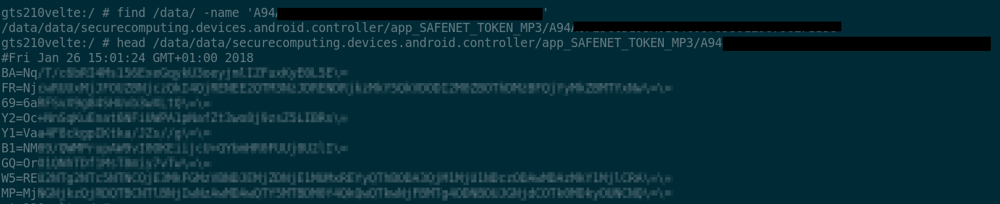
Multiple runs of the application show that the first line of the file
changes at each OTP code generation. It might be the case that the
application is actually saving its state on the file system, the nature
of which could be a seeding number or a counter.
With the help of the decompiled code, stepping through relevant function
calls is made easier and reveals quite a lot of information; for instance,
one of the first functions to get called from the com.safenet package
is c.e.o.a:
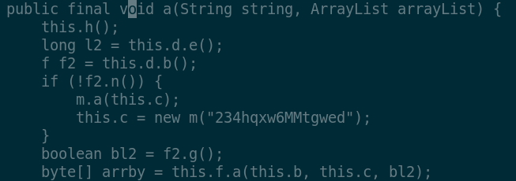
The object this.f is an instance of
com.safenet.c.e.t. Due to ProGuard optimization, all class
methods appear as overloaded with the same name but different type
signatures:
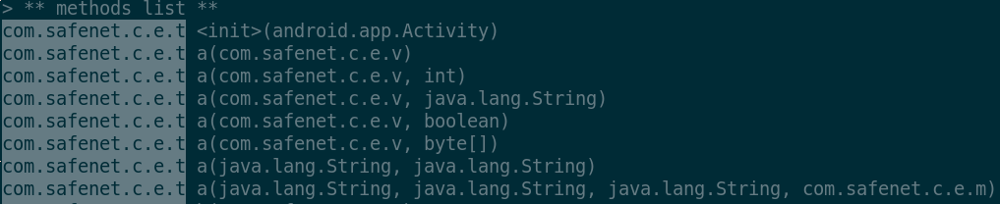
Obsessively stepping through the function calls leads to the
one which actually gets called in the context of our interest,
in this case com.safenet.c.e.t.a(java.lang.String,
com.safenet.c.e.m, boolean), with its actual parameters
this.b, this.c and bl2 respectively. Although we are not
able to inspect local variables without rebundling the application with
annotated symbol names, we can still dump objects and their fields:
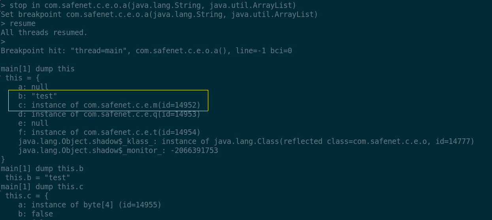
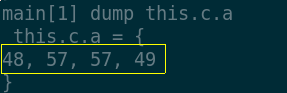
As it can be seen, the field this.b is exactly the name I
assigned to my personal token, while more interestingly:
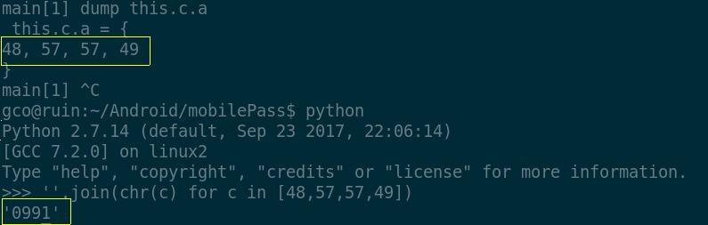
This is the PIN of my OTP token in memory. Again, the latter
does not represent a security statement (although many infosec
professionals believe that keeping plain-text secrets in memory in
a garbage-collected language is a vulnerability); my motivation
is, in a sense, liberational. In this regard, I endorse
the original meaning of the word "hack", without
any security implications (see Pastor Laphroaig's praise of junk
hacking). From this perpective then, my goal has not been reached
yet. What I am after is the secret key used to generate the OTP codes,
in order to clone the token and bend it to my own will, whose extension
collides with that of tyrannical security bullies.
By attaching the debugger at a more strategic stage of execution, for
example inside the activity window past the PIN dialog, we obtain a finer
and more educated trace. An interesting sequence is entered within the
context of the c.e.w.a function which afterwards proceeds to
call the ssl function com.safenet.openssl.d.a. The latter
returns an array of 32 bytes to the caller which surprisingly enough
returns the generated OTP code (195494) that I obtained during
the execution trial. Clearly, the call to openssl.d.a is where
the secret key is almost certainly used to generate the MAC code used
by c.e.w.a to derive the OTP from:
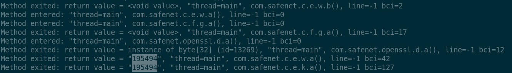
The decompiled code of the c.e.w.a function is quite
straightforward:
Tracking down name references in the code reveals that the first actual
parameter is the enum com.safenet.c.e.e, while the second and
the third are more relevant. Object2 is just a 8-bytes piece of data
generated with only one further reference:
long l2 = this.c;
As regards to the second argument, object, we can see above
in the code that it is just a reference to this.a. In other
words, elucidating on the nature of the openssl call is just a matter
of inspecting the current object in the stack frame once the execution
stops at com.safenet.c.e.w.a(String):
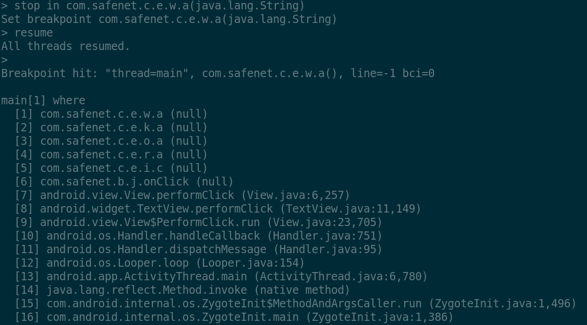
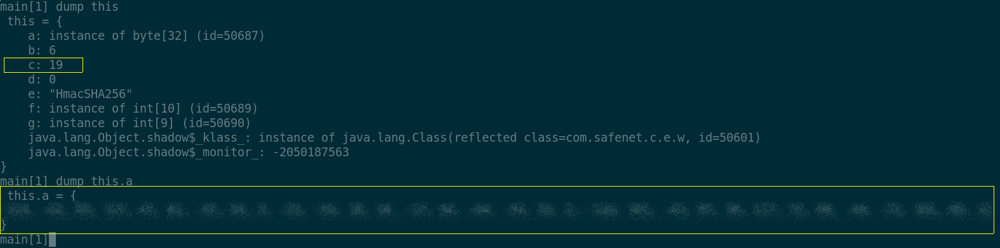
We see the 'c' field having an integer value of 19, while the 'a'
field is a suspicious 32 bytes array. Remembering that bytes are signed
values in Java, we have a chance to give those bytes a better shape:
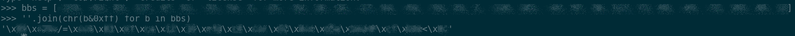
The assumption is that we are in the presence of a cryptographic
key used for the generation of the OTP.
Furthermore, given that the message provided
to the openssl call, i.e. object2, is only generated by means of an
integer, this.c, we can make an even-stronger assumption: the
OTP generation algorithm is not time-based but counter based, where
this.c is the counter, which then gets stored in the file
identified before. Since the decompiled code of the c.e.w.a
function is in fact an almost one-to-one translation of the HOTP reference
implementation as per RFC
4226, this assumption becomes more concrete.
Our proof of concept then takes the form of a small Python script
which generates OTP codes according to the HOTP algorithm. Fortunately
enough, we do not need to reimplement the algorithm from scratch as
there are plenty of libraries already available for the task, like pyotp.
import pyotp
import base64
import hashlib
import os
key = 'as retrieved from the memory dump'
if __name__ == '__main__':
path = os.path.join(os.getenv('HOME'), '.mpass.ctr')
try:
f = open(path, 'r')
counter = int(f.read())
except IOError:
counter = 0
finally:
f = open(path, 'w')
otp = pyotp.HOTP(base64.b32encode(key), digest=hashlib.sha256)
print 'OTP ===> %s' % otp.at(counter)
f.write('%s' % (counter+1))
f.close()
This is the part where the drumroll starts, Mr. Safenet:
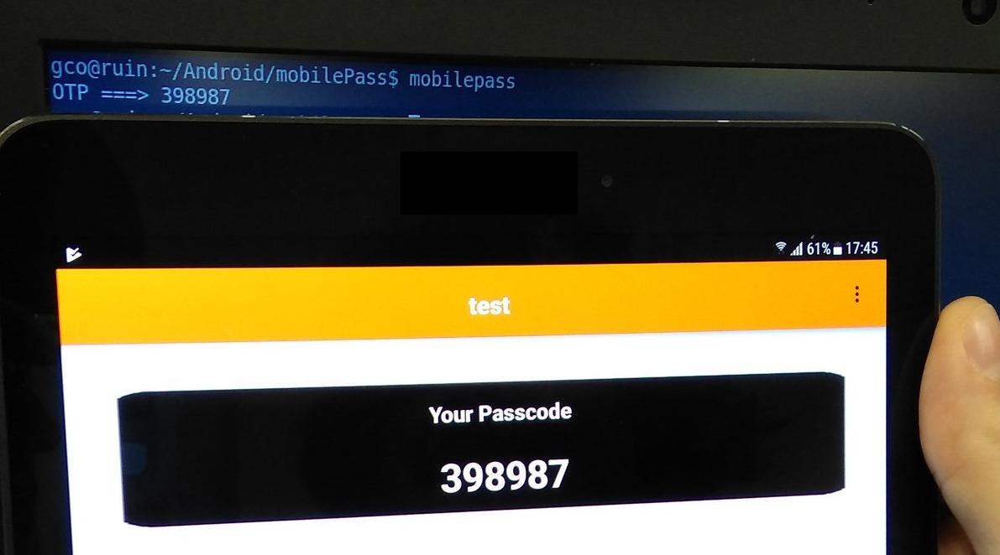
Voila! It seems that I can endlessly clone my software
token and use it wherever I want, and finally access my
email with no restrictions! This is what I call a real
multi-factor authentication! And it proves that yes,
it is still O.K. to be a Luddite.